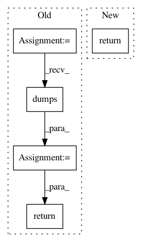

afadb6b3193224c40ffb76496e1aa14567b3dcb4,syft/grid/clients/data_centric_fl_client.py,DataCentricFLClient,simplify,#Any#Any#,288
Before Change
log_msgs = json.dumps(data_centric_fl_client.log_msgs)
verbose = json.dumps(data_centric_fl_client.verbose)
encoding = json.dumps(data_centric_fl_client.encoding)
timeout = json.dumps(data_centric_fl_client.timeout)
return (address, id, is_client_worker, log_msgs, verbose, encoding, timeout)
@staticmethod
def detail(worker: AbstractWorker, client_tuple: tuple) -> "DataCentricFLClient":
After Change
@staticmethod
def simplify(_worker: AbstractWorker, worker: "VirtualWorker") -> tuple:
return BaseWorker.simplify(_worker, worker)
@staticmethod
def detail(worker: AbstractWorker, worker_tuple: tuple) -> Union["VirtualWorker", int, str]:
detailed = BaseWorker.detail(worker, worker_tuple)
In pattern: SUPERPATTERN
Frequency: 3
Non-data size: 5
Instances
Project Name: OpenMined/PySyft
Commit Name: afadb6b3193224c40ffb76496e1aa14567b3dcb4
Time: 2020-08-21
Author: 2017csb1092@iitrpr.ac.in
File Name: syft/grid/clients/data_centric_fl_client.py
Class Name: DataCentricFLClient
Method Name: simplify
Project Name: pantsbuild/pants
Commit Name: 346fcba4d6c5244c3953404bf2c07a1c06ffcf7d
Time: 2018-12-21
Author: ericarellano@me.com
File Name: src/python/pants/backend/python/python_artifact.py
Class Name: PythonArtifact
Method Name: _compute_fingerprint
Project Name: home-assistant/home-assistant
Commit Name: 0e41342a404a6129229333e071cb642be7c6eeeb
Time: 2017-05-11
Author: mail@fabian-affolter.ch
File Name: homeassistant/components/sensor/dweet.py
Class Name: DweetSensor
Method Name: state